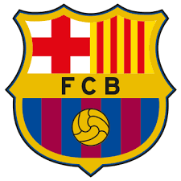

Una de las principales características del F. C. Barcelona es su carácter polideportivo. Además de su sección principal, la de fútbol, el club cuenta con otras cuatro secciones profesionales: las de baloncesto, balonmano, hockey sobre patines y fútbol sala. Entre las cinco secciones profesionales, el F. C. Barcelona suma 39 Ligas de Campeones (o Euroligas en el caso del baloncesto)
nota 1 lo cual le convierte en el club polideportivo más laureado de Europa y, junto a Dinamo de Moscú y CSKA de Moscú (este con 7), el único que ha conseguido el máximo título continental en 5 deportes diferentes.15 Tuvo el hito de haber ganado la Liga de Campeones consecutivamente, durante 17 años, desde la temporada 1995/96 hasta la 2011/12 con alguna de sus secciones profesionales y ha conseguido, hasta la actualidad, 1 «triplete» europeo con las secciones de Fútbol
Balonmano y Hockey Patines en la temporada 2014/15 y 6 «dobletes» europeos con las secciones de Balonmano y Hockey Patines en las temporadas 1996/97, 1999/00 y 2004/05 con las secciones de Baloncesto y Hockey Patines en la temporada 2009/10, con las secciones de Fútbol y Balonmano en la temporada 2010/11 y con las secciones de Fútbol Sala y Hockey Patines en la temporada 2013/14.
Destaca también el hecho que desde la temporada 1988/89 que se inicia con la victoria del equipo de fútbol, en la final de la Recopa de Europa en Berna contra la Sampdoria hasta la 2011/12, cada temporada durante 24 años, alguno de los deportes del club levantó algún título europeo.En cuanto a temporadas se refiere, en el cómputo global de títulos conseguidos por todas las secciones sin contar los regionales, la temporada 2011-12 es la más exitosa del club.
Según las estadísticas que realiza el IFFHS, el F. C. Barcelona es el mejor equipo de fútbol europeo y mundial de la primera década del siglo XXI. Con fecha a 31 de diciembre del 2009, el F. C. Barcelona lidera con 807 puntos la clasificación histórica del ranking mundial de clubes que realizaba hasta finales de 2009 la IFFHS, con una diferencia de 81 puntos sobre el segundo en el ranking (Manchester United).28 Cabe destacar también que según la clasificación anual de clubes que realiza la IFFHS, en 1997, 2009 y 2011 fue designado como el mejor equipo del fútbol mundial, siendo también el club que más veces ha encabezado dicha clasificación.31 Es además el equipo de fútbol que más veces ha figurado en los podios del FIFA World Player (15) y del Balón de Oro (20).Sebastian aragon En 2009 el club ganó todas las competiciones que disputó (Liga, Copa, Supercopa de España, Liga de Campeones, Supercopa de Europa y Copa Mundial de Clubes), pasando a la historia por ser el primer equipo del mundo en lograr un «sextete», al ganar seis títulos oficiales en un mismo año.
En 2015, el equipo, bajo el mando de Luis Enrique, ganó el triplete (Liga Española, Copa del Rey y Liga de Campeones en un mismo año) por segunda vez en su historia, pues ya lo había hecho en 2009, siendo el primer equipo europeo en conseguir tal hazaña